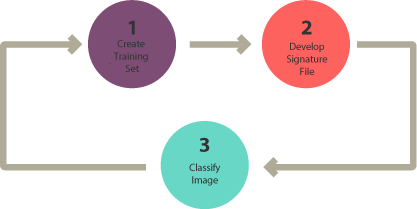
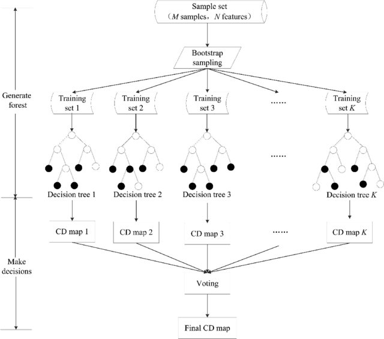
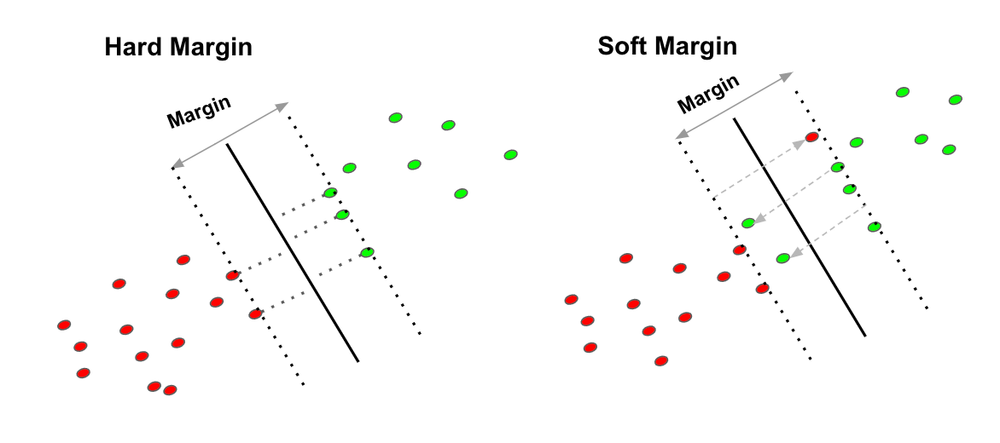
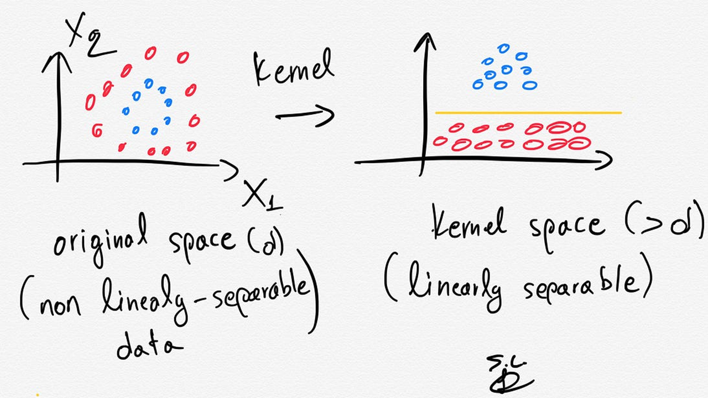
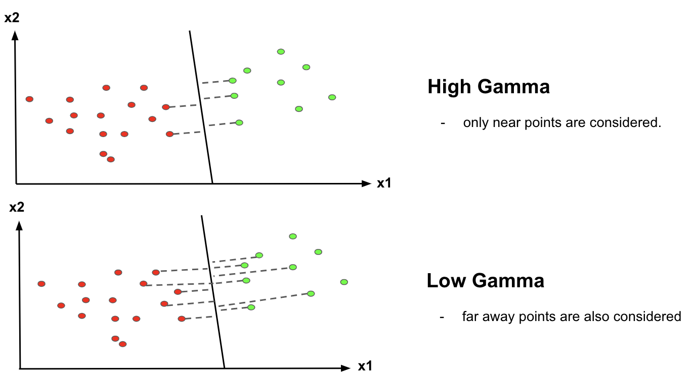
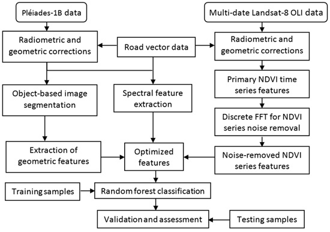
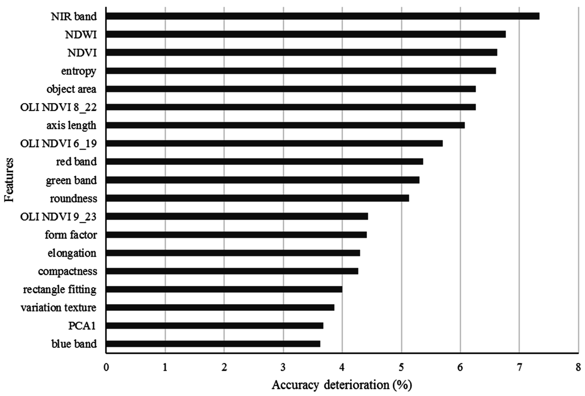
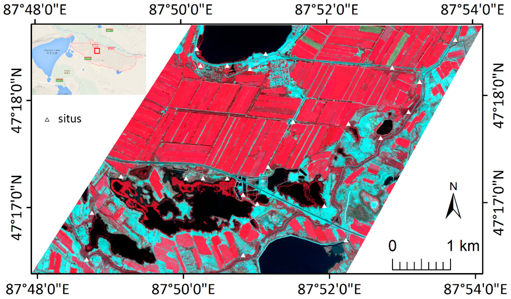
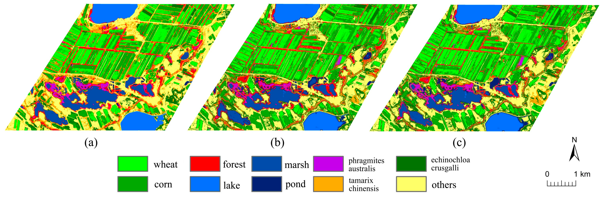
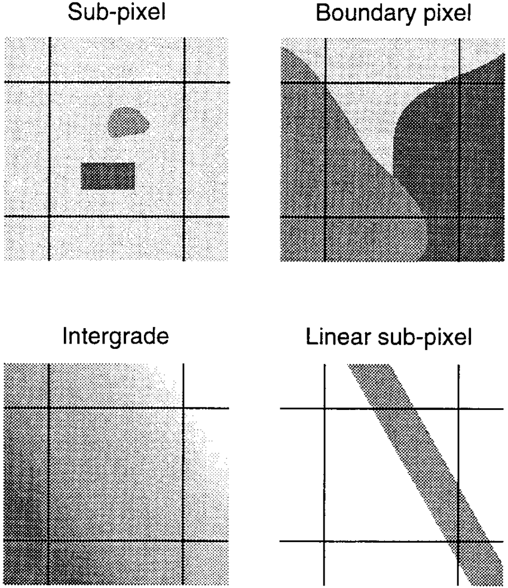

6 Week 6
6 Classification Methods 1
6.1 Summary
The classification methods can be divided into two approach - unsupervised and supervised algorithms. However, this diary will mainly focus on the supervised algorithms.
Supervised ML follows the following process:
- Class definition
- Pre-processing
- Training
- Pixel assignment
- Accuracy assessment6.1.1 Random Forests (RF)
- General Information about RF
RF simply means that many are better than one. We do “bootstrap” samples (bagging - only 70% of data is used), and create nodes with random number of variables and on and on. Eventually, we will make many decision trees from random number of variables. These different decision trees are called a forest.

- How a decision is generated in RF?
We test this forest with the samples that were not used to create the decision trees. These samples are called “Out of Bag (OOB)” (30%). The majority of decisions made on the OOB are chosen, and the proportion fo OOB incorrectly classified are called OOB error.
For example, when we want to classify a pixel, if the majority of decision trees says it is an urban area, the pixel is categorised as an urban area. One thing to note is that OOB is different from test data as test data are never included in building decision trees.
6.1.2 Support Vector Machine (SVM)
- General Information about SVM
SVM is a maximum margin classifier. SVM looks for a place where it can separate datasets most effectively. The benefit of SVM is that it uses structural risk minimisation which minimises errors on unseen data.

The distance from the diving line to the closest points is called the maximum margin. However, sometimes points from some datasets are very close to points of other datasets, which could lead to misclassification.
Terminology
| Term | Description |
|---|---|
| Soft margin |
|
| Hard margin |
|

Parameters of SVM:
The best values for C and gamma can be searched through using grid search, which tests every possible values for the hyper-parameters
| Parameter | Description |
|---|---|
| C |
|
| Kernel |
|
| Gamma |
|


- What is the example of the application of SVM?
Let’s say ‘pixel 1’ has values for band 1, band 2, band 3, and so on. For reference, a pixel which has a number of band values is called Pattern vector. If there are forests, they will have many pattern vectors. If we put these into a feature space, these pattern vectors will be very close and on top of each other. This is the moment where SVM can come into play and separate them by allowing some misclassification.
6.2 Applications
6.2.1 General Background
Some land covers, such as wetland, are hard to classify due to unclear distinction with other surrounding land covers, massive seasonal changes in vegetation and hydrological variation. In this section, I looked into how somewhat classification-wise challenging land covers can be classified in conjunction with ML algorithms.
6.2.2 Brief Information about a Research
Tian et al. (2016) aimed to classify wetland land cover by fusing the Pléiade-1B data with multi-date Landsat-8 data. The former was performed based on an object-oriented approach, and the geometric and spectral features were extracted. From the latter, the normalized difference vegetation index (NDVI) data were calculated and this enabled to reflect phenological changes in vegetation. The feature datasets obtained from two sensors were optimised and used to build a RF model.

The RF classifier obtained an overall accuracy of 93 % and the research team found out that the inclusion of the geometric shapes improved the classification accuracy of the farming lands and water bodies by 5% - 10%.
In addition, there has been a challenge in classifying wetland due to similar spectral features of vegetation covers. By making use of the phenological difference and the textual information, the team reduced the classification errors and improved the overall accuracy about 10%.

The classification result of the RF model was compared with other ML classification methods such as Support Vector Machine (SVM) and Artificial Neural Network (ANN). The research team found that the overall accuracy of the RF model was 10% higher than that of the SVM and ANN classifiers.
6.2.3 Insight from the findings
The classification results bring us back to a question we had in the lecture.
‘Does the most advanced ML classification method always achieves the best results?’
As shown in the results, the most advanced ML algorithms - SVM and ANN - did not achieve the best classification results. They were 10% behind the overall accuracy compared to the RF model’s result.
The author stated that the way that RF model builds each decision tree was significant in achieving a higher accuracy. In the RF model, each decision tree is a “specialist tree” which considers the feature domain - the data from geometric and textual features.
For instance, the lakes which are characterised as being large and in a circular shape with a smoother shoreline, which are rather easy to classify. However, marshes and ponds inherit heterogeneous features, and are in irregular shape, which pose difficulties in classifying them.
Therefore, the specialist trees grown with considerations for these features in the RF model explain why the RF model achieved a higher accuracy. What we can learn from this research is that the location- and context-specific ML algorithm is required to achieve a better classification accuracy. The most advanced and state-of-the-art algorithms do not guarantee the best results.


6.3 Reflections
The week 6’s lecture covers a number of ML algorithms that are being used in satellite imagery classification. These classification methods are employed to better distinguish one band from the other band which help classifying land cover in the image. They essentially do the same functionality in classifying data but they do it in different ways.
However, there are some aspects that we have to ponder. Firstly, these classifiers often make things very complicated. While state-of-the-art ML algorithms are highly accurate, they are very difficult to interpret.
Secondly, we need to consider why we are using a specific ML algorithm to classify our data. If we could differentiate one band from the other with a simple method, is there still a necessity to use a highly developed classification method?
The last but not the least, we have to think about classification itself. In reality, one pixel is not solely composed of one type of land cover types. It can co-exist with other types of land cover types. Therefore, we need to contemplate on to what extent we have to classify or ignore the values in a pixel.
As a whole, the lecture enabled me to think critically about
Why we use this method?
and
What are the assumptions of this specific method and are we aware of them?
The comprehensive understanding of the rationale behind the ML algorithm will help me choose an appropriate method based on data I am trying to analyse. Moreover, this will enable me to comprehend not only the accuracy of the model but to approach to my data in a holistic manner.
